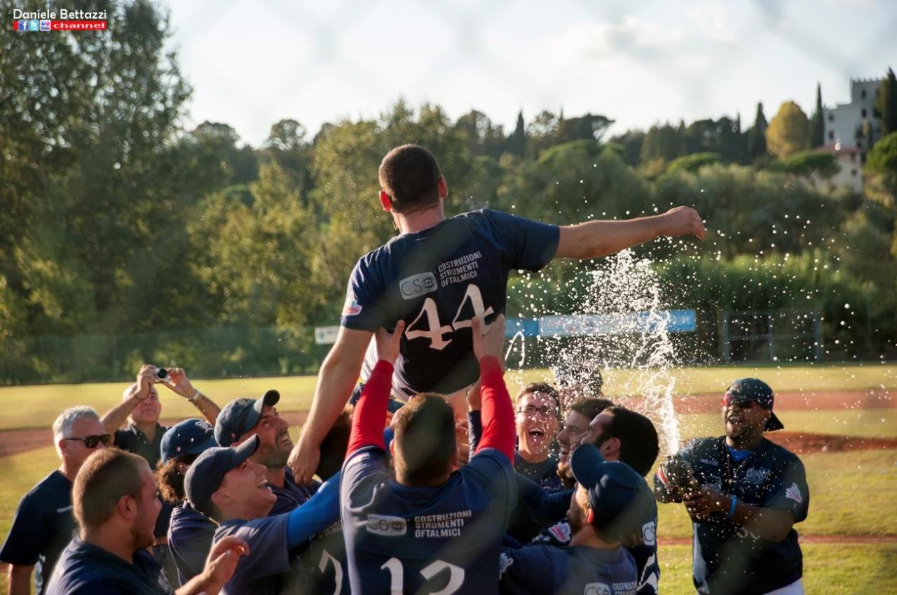

Un solo passo. Era quanto bastava al Buttrio per aggiudicarsi la finale e guadagnarsi la promozione in Serie B.
I Lancers invece dovevano fare qualcosa di più, erano obbligati a prendere una rincorsa davvero difficile e superare un ostacolo troppo alto, per molti.
Ma quell’ostacolo non era troppo alto per loro, per questo gruppo di giovani giocatori guidati da due ragazzi un pò meno giovani ma con ancora tantissima voglia di mettersi in gioco unita alla voglia di trasmettere a questo giovane gruppo gli insegnamenti del Baseball.
Questo gruppo, questa squadra ha fatto qualcosa di grandioso. Ha gettato il cuore oltre l’ostacolo come si dice. Un cuore grande, anzi grandissimo! Questo gli era stato chiesto da Paolo e Daniele, gli allenatori, di metterci il cuore e di divertirsi nel giocare a Baseball.
I Lancieri si sono divertiti, eccome, ed hanno divertito il pubblico numeroso che è accorso a sostenere questa squadra, li ha divertiti con tre partite stupende.
Tre partite giocate alla perfezione, soprattutto in difesa e sul monte di lancio, che ha visto tre prestazioni importanti di Ciappi, Baratella ed infine Vannuzzi.
Tutti e tre sono rimasti lì sul monte dal primo all’ultimo lancio della partita trascinando la squadra alle tre vittorie necessarie per raggiungere quel sogno tanto ambito ed inseguito.
Li ha supportato una difesa attenta e precisa, che non si è fatta trovare impreparata quando gli avversari potevano tornare a farsi sotto con uomini in zona punto. Dagli interni a gli esterni alla batteria stessa si sono viste giocate di un livello superiore, giocate che hanno mostrato che i Lancers erano lì con la testa, e con tutto il cuore.
Anche nella fase offensiva i lastrigiani hanno dimostrato una crescita sorprendente, hanno sfruttato al massimo gli errori degli avversari ed hanno piazzato le valide giuste al momento giusto. Hanno corso tanto, c’era un ostacolo da superare ed una rincorsa da prendere, hanno corso su ogni battuta come se fosse l’ultima!
Ed alla fine tutto il lavoro fatto, il sudore, i dolori e la costanza avuta per tutta la stagione li ha ripagati nel migliore dei modi, davanti al proprio pubblico incredulo e felice!
Davanti ai lastrigiani, a gli amici, ai parenti, ai piccoli Lancieri e gli ex che hanno indossato la divisa blu dei Lancers!
Li ha ripagati con un sogno che si avvera. SERIE B.
Grazie al presidente Moretti, a Paolo, Daniele, Roberto, Sasha e Luciano! Grazie al Bara, Silva, Gerone, Lello, i’ Cica, Lakry, Darione, Beca, Noce, Lapo, Apa, Guincia, Bini, Albert, Teo, Jack e Pistol.
Grazie alle mitiche ragazze, mogli o fidanzate che sono sempre state presenti!
Grazie ai Lancierini e le loro famiglie, il vostro sostegno lo abbiamo sentito ogni lancio!
GRAZIE A TUTTI! FORZA LANCERS!!!